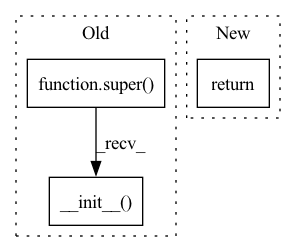

Pattern ID :14129
Before Change
class KPFCNN(tf.keras.Model):
def __init__(self, cfg):
super(KPFCNN, self).__init__()
// Model parameters
self.cfg = cfg
After Change
self.valid_labels = np.sort(
[c for c in lbl_values if c not in ign_lbls])
return
def organise_inputs(self, flat_inputs):
cfg = self.cfg
In pattern: SUPERPATTERN
Frequency: 3
Non-data size: 3
Instances Fragment ID: 47185039
Project Name: isl-org/open3d-ml
Commit Name: b79d4f1c6b9e8e981d07a7d8029aed8764177c79
Time: 2020-09-03
Author: 49262224+YilingQiao@users.noreply.github.com
File Name: ml3d/tf/models/kpconv.py
M Class Name: KPFCNN
N Class Name: KPFCNN
M Method Name: __init__(2)
N Method Name: __init__(2)
M Parent Class: BaseModel
N Parent Class: tf.keras.Model
M File Name: ml3d/tf/models/kpconv.py
N File Name: ml3d/tf/models/kpconv.py
M Start Line: 19
M End Line: 128
N Start Line: 21
N End Line: 131
Before Change
return self.model(img.to(self.device))
def postprocess(self, inference_output):
super().__init__( inference_output)
_service = DBTextDetectionHandler()
After Change
thresh_mask = thresh_mask.tolist()
res.append({"prob_mask": prob_mask, "thresh_mask": thresh_mask})
return res
_service = DBTextDetectionHandler() Fragment ID: 47185041
Project Name: huyhoang17/db_text_minimal
Commit Name: f4f4a579c2735d4894dbd7a518d7edd3a380158c
Time: 2020-06-17
Author: hoangphan0710@gmail.com
File Name: src/db_handler.py
M Class Name: DBTextDetectionHandler
N Class Name: DBTextDetectionHandler
M Method Name: postprocess(2)
N Method Name: postprocess(2)
M Parent Class: BaseHandler
N Parent Class: BaseHandler
M File Name: src/db_handler.py
N File Name: src/db_handler.py
M Start Line: 72
M End Line: 72
N Start Line: 95
N End Line: 107
Before Change
class NoLog(Logger):
def __init__(self):
super().__init__(op=False)
def _log_scalar_impl(self, val, descr, ix):
return
After Change
class NoLog(SummaryWriterSoph):
The hardcoded No-Op of the tensorboard SummaryWriter.
def __init__(self, *args, **kwargs):
return
def add_scalar(self, *args, **kwargs):
return
Fragment ID: 47185040
Project Name: turagalab/decode
Commit Name: c7f4a1d374f4a6cc6dd28cd8101415aba16e42e3
Time: 2020-04-24
Author: gitdev@LRM.PHOTO
File Name: deepsmlm/neuralfitter/utils/logger.py
M Class Name: NoLog
N Class Name: NoLog
M Method Name: __init__(1)
N Method Name: __init__(1)
M Parent Class: SummaryWriterSoph
N Parent Class: Logger
M File Name: deepsmlm/neuralfitter/utils/logger.py
N File Name: deepsmlm/neuralfitter/utils/logger.py
M Start Line: 104
M End Line: 105
N Start Line: 20
N End Line: 21